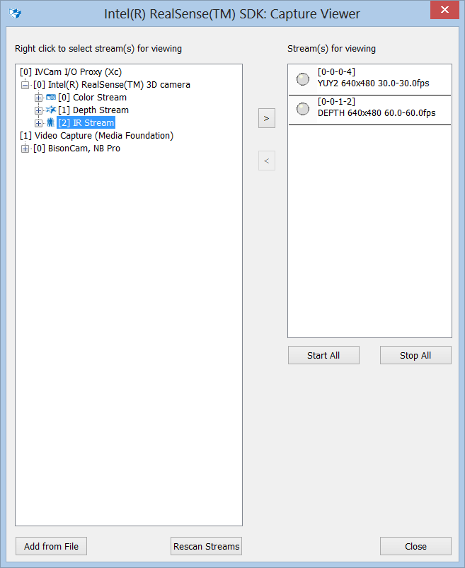
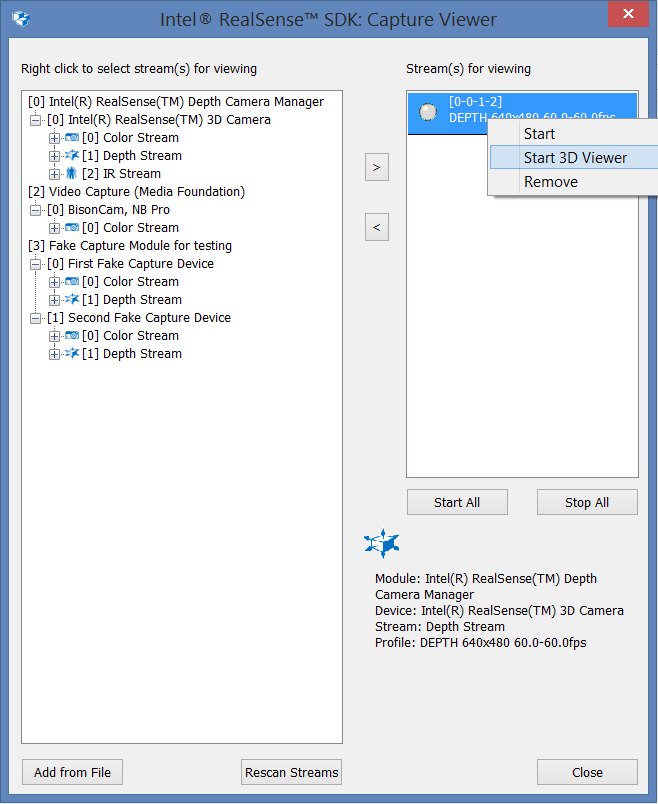
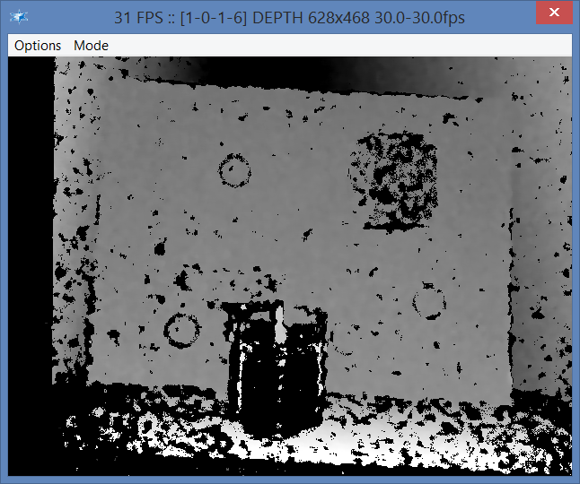
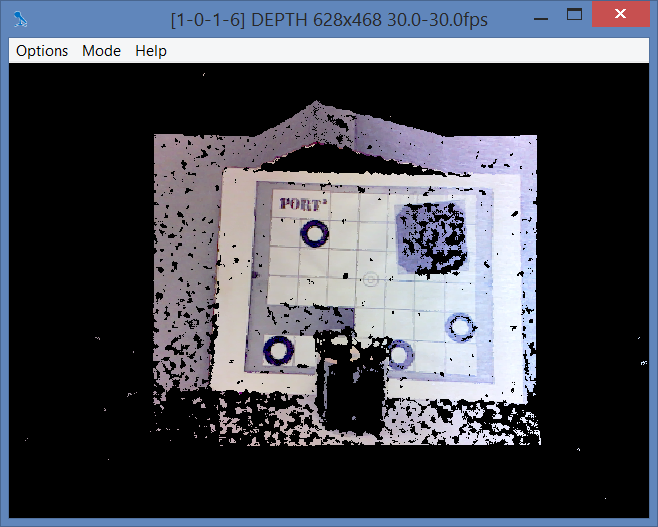

Tool: capture_viewer |
Top Previous Next |
|
The capture_viewer tool visualizes color, depth, vertices, and audio streams from any input device. The tool presents a tree view of devices and their streams on the left panel as illustrated in Figure 98. Select any number of streams to the right panel for display by right clicking on the streams or by clicking the > button. Use the < button to remove streams from display. Use the Start All and Stop All buttons for starting and stopping display. The tool displays each stream in a separate window.  Figure 98: Tool capture_viewer Use the Add from File button to add an existing recorded file or multiple files to the playback list, and then select certain streams in the files for playback. If, for any reason, the device list changes, the application can use the Rescan Streams button to rescan the devices. The following are specific actions available on depth streams:
2D and 3D Visualization When visualizing a depth stream, you can right click and select the 2D viewer or the 3D viewer, as illustrated in Figure 99. The "Start" menu item starts a 2D viewer, and the "Start 3D Viewer" menu item starts a 3D viewer. See Figure 100 and Figure 101 for example screens. In the 3D visualization case, you can use the mouse to rotate the viewing angle.  Figure 99: 2D/3D Viewer Selection  Figure 100: Depth Image 2D Visualization  Figure 101: Depth Image 3D Visualization
|